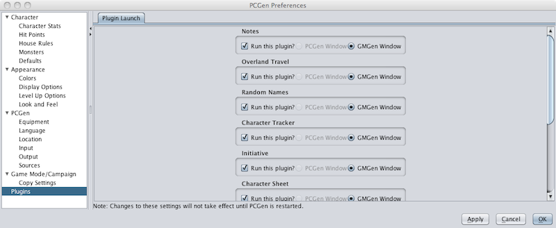

The Plugin Preferences allow the user to determine which plugins are loaded with PCGen and where it will appear if it is included and run.

Unchecking the box beneath the plugin name will make it unavailable when running PCGen.